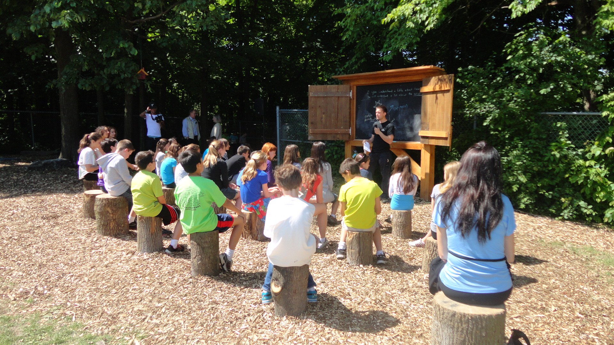
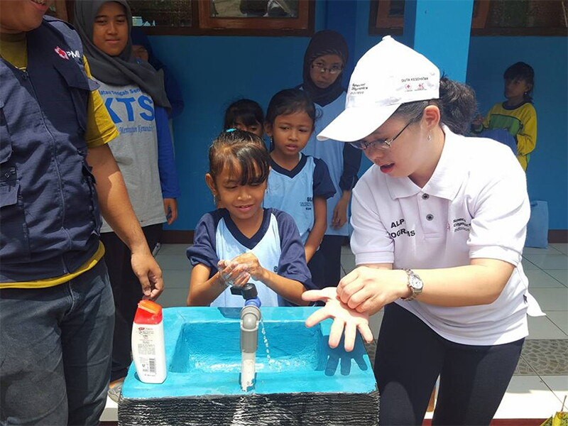
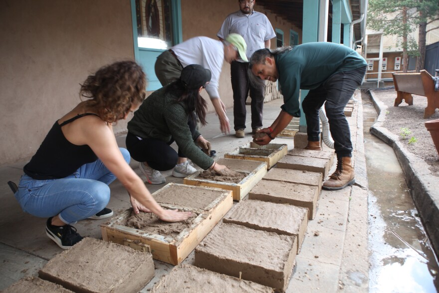

Youthlinc expedition teams are completely student-driven. Every participant is placed into a specific committee based on their personal strengths and field of interest. Together, these committees plan every lesson, purchase every supply, and design every project before arriving in-country.
This hands-on preparation process takes place over several months of monthly leadership meetings, ensuring our service models remain highly sustainable, organized, and deeply respectful of local NGO needs.
Education Committee

Our education team builds comprehensive curriculums for local classrooms. Members lead interactive lessons covering English, basic math, scientific concepts, and vocational skills tailored to community needs.
Health & Hygiene

The health committee facilitates critical community seminars. They focus on fundamental wellness education, distributing hygiene kits, and organizing maternal health or dental care clinics alongside local professionals.
Construction Team

The construction muscle of our team coordinates physical infrastructure builds. Volunteers work alongside local contractors to build schoolrooms, reinforce clinics, and establish clean water collection systems.